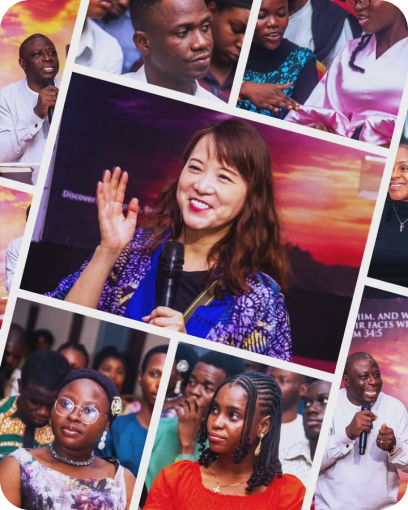
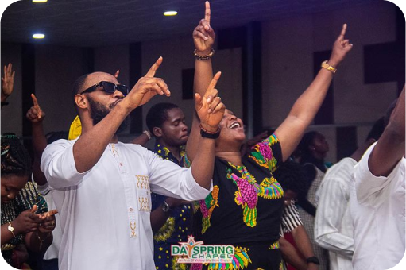
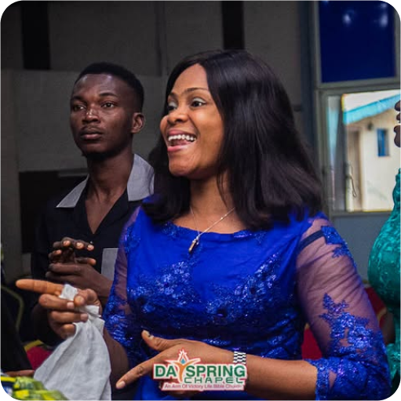

ABOUT US
Welcome to DaySpringChapel, a place where purpose is discovered, potentials are built, and dreams are fulfilled
BRIEF HISTORY OF DAYSPRING CHAPEL
As the Victory Life Bible Church grew, there came the need to establish modern-day centers where young Elites and Students can worship under a contemporary and supernatural atmosphere. This led to the establishment of DaySpring Chapel in August 2012. DaySpring Chapel was born out of a sincere desire to produce a new generation of Victory Life Bible Church (VLBC) that will impact their generation, serve God with all their hearts and live godly lives in a contemporary but not compromising way.
We are a group of people serving God with all our hearts in an atmosphere of love; with visions to raise Men, Women, Families, and Societies that are highly motivated and responsible to God; relating together and worshipping God in an atmosphere of love with an opportunity to discover purpose, build potentials; and fulfill dreams.
The prophetic scripture that birth the Church is:
Through the tender mercy of our God; whereby the dayspring from on high has visited us, to givelight to them that sit in darkness and in the shadow of death to guide our feet into the way of peace. Luke 1:78-79 (KJV)

WHO WE ARE
- We are a Church where:
- Service to God is made interesting and simplified
- People’s spiritual and physical needs are met
- Love to everyone is visible
- Salvation of souls is paramount
- Members are faithful and fruitful
- Message is biblical and mission is balanced
- Unbelievers are comfortable to attend
OUR MISSION STATEMENT
Discover Purpose; Build Potentials; and Fulfill Dreams.

OUR CREED
To be said at the end of every programs and activities:
I SHALL GO OUT WITH JOY AND BE LED FORTH IN PEACE; LINES ARE FALLING UNTO ME IN PLEASANT PLACES; PEACE IS EXTENDED TO ME LIKE A RIVER AND THE WEALTH OF NATIONS LIKE A FLOWING STREAMS. GOODNESS AND MERCY SHALL FOLLOW ME ALL THE DAYS OF MY LIFE AND I SHALL DWELL IN THE HOUSE OF THE LORD FOREVER
OUR GOALS, AIMS AND OBJECTIVES
- Show people the way to God and guide them to the way of peace
- Help people to discover God’s purpose for their life
- Help people to grow to maturity in Christ
- To build an institutional Church with an established structures that involves all members and not just a person
- To build a Global relevant Church
- To build a Church that attracts quality people and grows spiritually and astronomically
- To build a Church with structures and enforces systems that work
- To be a church where lives are transformed, future is preserved and heaven is secured

OUR CORE VALUE
- Love: To promote fellowship and good relationship among members of the church and create an atmosphere where there is cordial relationship and social support.
- Integrity and Trust: To build men and women of integrity, good moral standards, and thereby be role models in the society and family.
- Honor and Respect: To build a church where people honor each other in words, action and relationships with one another. To be a place where would be mutual respect among young and old leading to good human relations.
- Discipline: To build a disciplined workforce and church. To build a culture where nothing is taken for granted an everyone is disciplined with time, responsibilities in church and personal life.
OUR CULTURE
- Excellence: Make the church a place of excellence; paying attention to every details; looking beyond the obvious.
- Ethical Behavior: A place where Word of God is the Standard for living.
- Spiritual Growth: A place where the Word of God is edified for Spiritual Growth and Maturity.
- Purity: A place where the Word of God is the standard way of life.
OUR LEADERSHIP STRUCUTRE
- The Pastor: Pastor Eniola Fabusoro
- The Associate Pastor: Pastor(Mrs) Busola Fabusoro
- The Resident Pastor
- The Ministers
- The Church Administrator
- Unit Leaders and Small Group Leaders
- Workers
OUR GENERAL-OVER-SEER
OUR LEADERSHIP STRUCUTRE
- The Pastor: Pastor Eniola Fabusoro
- The Associate Pastor: Pastor(Mrs) Busola Fabusoro
- The Resident Pastor
- The Ministers
- The Church Administrator
- Unit Leaders and Small Group Leaders
- Workers